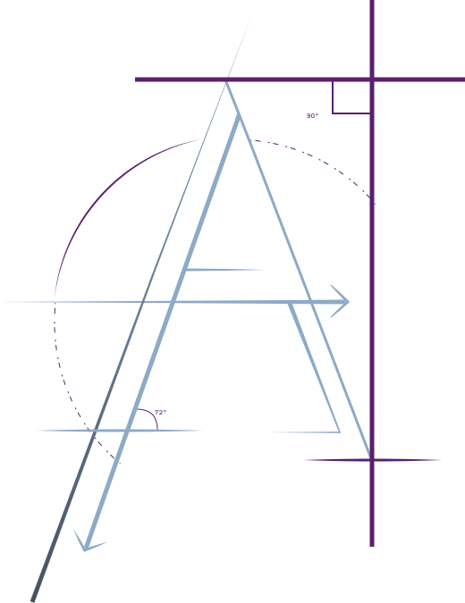

Atria
Interact with the BIM workbench tools using voice commands and discover a new way of working with computer-aided design.

Choose your operating system
Download the Windows or Linux version, whichever applies.
Keep the download
If a security warning appears, select “Keep on device”.
Run the app
Find the Atria file and open it.
The first time you open the app, it may take a few minutes to start while it downloads the required components. This process is only needed during the initial setup.